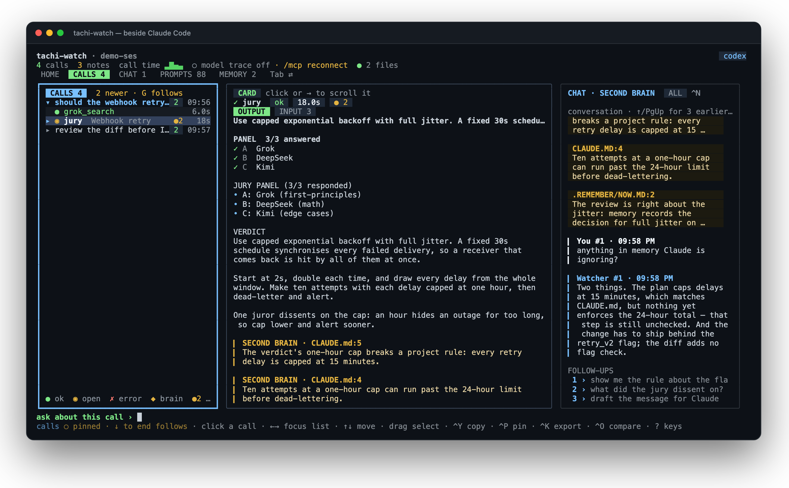

A terminal pane that follows one Claude Code session: every tachibot call
in full, a second model's notes on it checked against your project memory, a chat
with that model, and a way to send Claude the message you approved.

The real pane, showing a staged session: node scripts/watch-demo.mjs writes it.
01┌─ open it
One command, from inside Claude Code.
The pane opens in a split beside Claude and follows that session. It reads Claude Code's transcript and tachibot's trace; it never writes to either.
bash — open the pane
# from inside Claude Code: opens a split beside it
! tachi-agent watch --open
# pick the second model
! tachi-agent watch --open --brain claude # claude[:model] | codex | gemini | grok | driver[:name]
calls
Every tachibot call, in full
Grouped under the question you asked. Jury panels, diff reviews, triage rankings
and planner checklists each get their own view; anything else shows as the tool
rendered it. ^F searches every call's output, ^O compares two.
second brain
Checked against your memory
A second model reads each finished call next to CLAUDE.md,
AGENTS.md, Claude Code's auto-memory and .remember/, and
optionally dokoro recall. Its notes cite the file and line they rest on.
chat
Ask about what you are looking at
Type a question; the selected call rides along as context. Answers come with
follow-ups on keys 1–3.
prompts
tachibot's technique catalog
The 88 prompt techniques ship with the pane. Search them, let the second model
pick three for your task, and apply one to Claude with Enter.
02// send to Claude
Nothing reaches Claude until you approve it.
The second brain may propose a message; ^S sends it, ^E edits it, Esc drops it. @claude <text> sends your own words.
bash — sending from any terminal
tachi-agent watch --install-hooks # this project (.claude/settings.local.json)
tachi-agent watch --install-hooks --global # every project (~/.claude/settings.json)
tachi-agent watch --uninstall-hooks
A Claude Code hook carries the message, so the terminal does not matter.
Restart Claude Code after installing. The hook hands Claude what you sent at its next
step: after a tool call, when it finishes a turn (it then carries on with your
message), or with your next prompt. Nothing is typed into Claude's prompt, so a
message can never answer one of its dialogs. The pane shows a receipt when Claude has it.
A message that waits an hour is dropped, and the pane says so. If a hook is killed
between printing a message and recording it, a later hook delivers it again:
Claude may see a message twice in that case, but never misses one. Without the hook,
and outside cmux and Herdr, the pane shows the text for you to copy.
03┌─ terminals
Opening the split and sending are separate jobs.
The split needs a terminal that can be scripted. Sending does not, once the hook is installed.
Terminal
watch --open splits it
Sends to Claude
cmux
yes
yes, with a delivery receipt
Herdr (herdr), Herdr app (hc)
yes
yes — typed into Claude's prompt, held while a dialog is open
tmux, zellij, WezTerm
yes
with the hook
kitty
yes, with allow_remote_control yes and listen_on unix:/tmp/kitty in kitty.conf
with the hook
Ghostty 1.3+, iTerm2 (macOS)
yes, by AppleScript
with the hook
anything else
prints the command to run in a pane you split
with the hook
The pane draws in 24-bit colour where the terminal has it and in the 256-colour
palette elsewhere, and shows fewer sections on a short pane instead of squeezing them.
Model trace. The model calls nested under each tachibot call come
from tachibot's trace (TACHIBOT_TRACE_UI=1). The pane follows only the
tachibot that its own Claude session started, so it needs Claude's pid:
watch --open passes it, and so does the command it prints. A pane
started without it still lists every call from the transcript, without the nested
model calls.
04// keys
Keyboard first; the mouse works too.
Key
Does
Tab / Shift+Tab
Next / previous view: HOME, CALLS, CHAT, PROMPTS, MEMORY
↑↓, ←→
Move in the list; switch focus between list and card
^F
Search every call's output
^B
Behind the scenes: the model calls of the selected call
^S / ^E / Esc
Send / edit / drop the proposed message
^Y, ^K, ^P, ^O
Copy, export, pin, compare the selected call
^G, ?, ^C
Home, all keys, quit
Commands in the input line: /review, /send <text>, /brain <spec>, /label <name>, /layout auto|split|stack, /mouse on|off, /help.